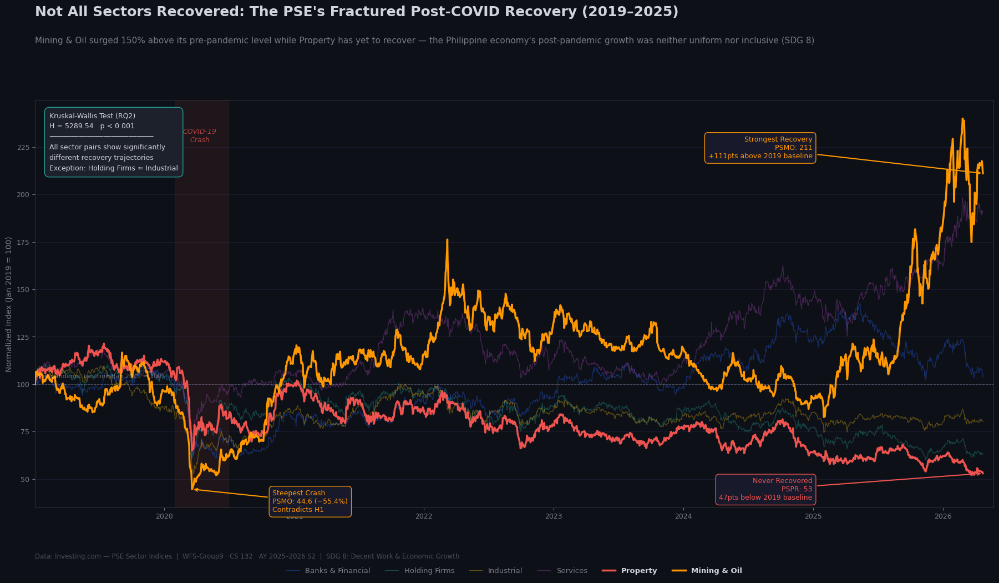

The chart below summarizes the central findings of this project in a single visualization. All six PSE sector indices are normalized to January 2019 = 100, allowing direct cross-sector comparison of crash depth and recovery trajectory. Mining & Oil (PSMO) and Property (PSPR) are highlighted as the two most divergent outcomes: the former surged to more than 2.5 times its pre-pandemic level by April 2025, while the latter remained below its January 2019 baseline throughout the entire observation window.

Mining & Oil surged approximately 150% above its pre-pandemic baseline while Property has yet to return to its January 2019 level as of April 2025. The Kruskal-Wallis test (H = 5289.54, p < 0.001) confirms that these divergent trajectories are statistically significant across all six sectors. The Philippine economy's post-pandemic growth was neither uniform nor inclusive, directly implicating SDG 8: Decent Work and Economic Growth.
Prior to analysis, the combined dataset was loaded and verified in Python. The following cleaning and preprocessing steps were applied to ensure data integrity.
-
1
Date parsing The
Datecolumn was parsed from string to datetime format (YYYY-MM-DD) and the dataset was sorted by Sector and Date. -
2
Numeric conversion The
Pricecolumn was converted to float after removing any embedded comma separators (e.g., "1,234.56" to 1234.56). -
3
Null check No null values were found in the
Date,Sector, orPricecolumns across all 10,728 rows. -
4
Duplicate check No duplicate (Date, Sector) pairs were found. Each sector has exactly 1,788 unique trading day observations.
-
5
Normalization Each sector's closing price was normalized to a January 2019 baseline of 100 (Normalized = Price / First Price × 100) to allow direct cross-sector comparison independent of absolute index levels.
The chart below shows the normalized index performance of all six PSE sectors from January 2019 to April 2025 (top panel), alongside the peak-to-trough drawdown for each sector during the COVID-19 crash window of Q1 to Q2 2020 (bottom panel). Hover over the lines and bars for exact values.
Mining & Oil (PSMO) experienced the steepest decline, falling 61.8% from its pre-pandemic peak to its COVID-19 trough in March to April 2020. This result contradicts H1, which predicted that Services and Property would decline most sharply. Instead, Services (PSSE) registered the smallest drawdown among all six sectors at 40.2%, likely because telecommunications and media companies, which constitute a significant portion of the Services index, continued operating throughout the community quarantine period with minimal disruption to revenues.
In terms of post-pandemic performance, Mining & Oil demonstrated the strongest recovery by a considerable margin, with its normalized index exceeding 200 by 2024 and reaching approximately 250 by April 2025, which is more than 2.5 times its January 2019 baseline. Property (PSPR), by contrast, remained the clear laggard: its normalized index was still below 100 as of April 2025, indicating that the sector had not returned to its pre-pandemic baseline level within the six-year observation window.
The box plots below show the distribution of normalized index values for each sector during the post-crash recovery window from July 2020 to April 2025. The Kruskal-Wallis test result is annotated directly on the chart.
The box plots reveal stark differences in recovery distributions across sectors. Property records the lowest median normalized value during the recovery period, confirming that it spent the bulk of 2020 to 2025 below its pre-pandemic baseline. Services and Mining & Oil show the widest distributions and highest medians, reflecting sustained upward momentum throughout the recovery window. Holding Firms and Industrial exhibit similar, compressed distributions near the 80 to 90 range, suggesting a partial but incomplete recovery.
The Kruskal-Wallis test yields H = 5289.54 with p ≈ 0, providing strong statistical evidence to reject the null hypothesis and confirm H2. The six PSE sector indices do not share the same recovery trajectory distribution, and the differences are not attributable to chance at any conventional significance level.
H1 predicted that Services and Property would experience the steepest declines due to their dependence on physical consumer activity, while Industrial and Holding Firms would recover fastest. The data does not support this. Mining & Oil crashed hardest at -61.8%, while Services had the smallest drawdown at -40.2%. In terms of post-pandemic performance, Mining & Oil reached the highest normalized level by April 2025, not Industrial or Holding Firms. Property, as predicted, remained a laggard, but for a different reason than hypothesized: it was not the worst in the crash but proved to be the slowest to recover.
H2 predicted statistically significant differences in post-COVID recovery trajectories across the six PSE sector indices at α = 0.05. The Kruskal-Wallis test confirms this at a level far exceeding the threshold.
Post-hoc Dunn's test with Bonferroni correction was conducted to identify which sector pairs drive the significant result. All pairwise comparisons returned p < 0.05 except one: Holding Firms (PSHO) and Industrial (PSIN) were the only sector pair with a non-significant difference (p = 1.0 after correction), indicating that these two sectors followed statistically indistinguishable recovery trajectories from 2020 to 2025. All other 14 pairwise comparisons were significant, confirming that each remaining sector pair diverged meaningfully in its recovery path.
| Sector Pair | Corrected p-value | Significant at α = 0.05 |
|---|---|---|
| PSHO vs PSIN (Holding Firms vs Industrial) | 1.0000 | No |
| All other 14 pairs | < 0.0001 | Yes |